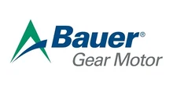

Поставляем оригинальные мотор-редукторы Bauer Gear Motor (серии BG, BF, BK, BS) под заказ + изготовим аналог дешевле. Замена по присоединительным размерам — без переделки оборудования. Цена и срок — по запросу.
Оригинальные редукторы и мотор-редукторы Bauer Gear Motor (серии BG, BF, BK, BS) — под заказ, с гарантией производителя. Пришлите модель или шильд — сообщим цену и срок. Нужно дешевле — изготовим аналог (см. ниже).
| Серия Bauer | Типоразмеры (поставляем оригинал) |
|---|---|
| BG — соосно-цилиндрические | BG02…BG100 |
| BF — плоские цилиндрические | BF10, BF20, BF30, BF40, BF50, BF60, BF70, BF80 |
| BK — коническо-цилиндрические | BK06, BK20, BK40, BK60, BK70 |
| BS — червячные | BS |
| Двигатели в сборе | серии DSE / DSD / D..LA4 |
Цена и наличие оригинала — по запросу. Не оферта.
Заменяем червячные мотор-редукторы Bauer на аналоги собственного производства (серии Ч, 2Ч, МЧ, МЧ2). Узел встаёт на штатное место по присоединительным и габаритным размерам — переходные фланцы и спецвалы изготавливаем по вашим чертежам.

| Заменяем серии Bauer | BS, BF, BG, BK |
|---|---|
| Мощность двигателя | 0.06–200 кВт |
| Передаточное число | 3.77–6510 |
| Наш аналог | Редукторы серии ZR (червячные, плоские цилиндрические, соосные, конические) |
| Гарантия | 24 месяца |
| Срок | Отгрузка со склада от 3 дней, изготовление от 5 рабочих дней |
Совпадают присоединительные размеры, валы и фланцы — узел встаёт на штатное место.
Вдвое выше среднерыночной.
Отгрузка со склада от 3 дней — не ждать импорт месяцами.
Пришлите фото шильда или модель — подберём аналог за 15 минут.
Подбор по типоразмеру: каждой модели Bauer соответствует наш редуктор серии ZR. Точную замену по вашей модели или шильду подтвердит инженер — пришлите шильд или опишите задачу.
| Модель Bauer | Наш аналог |
|---|---|
| Червячные мотор-редукторы | |
| BS 02 | ZR 603 |
| BS 03, BS 04 | ZR 604 |
| BS 06 | ZR 605, ZR 606 |
| BS 10 | ZR 607 |
| BS 20 | ZR 609 |
| BS 30 | ZR 6010 |
| Плоские цилиндрические мотор-редукторы | |
| BF 06, BF 10, BF 20 | ZR 636 |
| BF 30 | ZR 646 |
| BF 40 | ZR 656, ZR 666 |
| BF 50 | ZR 676 |
| BF 60 | ZR 686 |
| BF 70 | ZR 6106 |
| BF 80 | ZR 6126 |
| BF 90 | ZR 6156 |
| Соосные мотор-редукторы | |
| BG 10X, BG 15, BG 20 | ZR 939 |
| BG 30, BG 40 | ZR 949 |
| BG 50 | ZR 979 |
| BG 60 | ZR 989 |
| BG 70 | ZR 999 |
| BG 80 | ZR 9109 |
| Конические мотор-редукторы | |
| BK 20 | ZR 838 |
| BK 30 | ZR 848 |
| BK 40 | ZR 858, ZR 868 |
| BK 50 | ZR 878 |
| BK 60 | ZR 888 |
| BK 70 | ZR 8108 |
Оставьте контакты или пришлите модель/шильд — инженер подберёт аналог, рассчитает присоединительные размеры и пришлёт КП.
Получить КПГабаритный аналог изготавливаем от 3 дней со склада или под заказ. Оригинал Bauer поставляем под заказ — срок зависит от модели и наличия, точные сроки сообщим при запросе.
Да, мотор-редукторы рассчитаны на работу с частотным преобразователем. Сообщите требуемый диапазон регулирования оборотов — подберём двигатель и комплектацию.
Передаём паспорт изделия, сертификаты и закрывающие документы — счёт-фактуру или УПД. Работаем по договору; для постоянных и серийных клиентов согласуем индивидуальные условия.
Да. Для производителей оборудования делаем серийные поставки с резервом на складе и фиксированной ценой по договору — приводная часть вашей серии всегда в наличии.
Хотите Bauer купить с гарантией и в срок — мы поставляем оригинальные мотор-редукторы Bauer Gear Motor под заказ и изготавливаем аналог Bauer дешевле. Мотор-редуктор Bauer серий BG, BF, BK и BS подбираем по модели или шильду и заменяем по присоединительным размерам без переделки оборудования.
Bauer Gear Motor — немецкий производитель мотор-редукторов, применяемых в конвейерах, насосах, миксерах и упаковочном оборудовании. Серия BG — соосно-цилиндрические мотор-редукторы для приводов общего назначения. Серия BF — плоские цилиндрические, удобные при ограниченной монтажной высоте. Серия BK — коническо-цилиндрические для угловой передачи момента, а серия BS — компактные червячные мотор-редукторы. Мы работаем со всеми этими сериями: и поставляем оригинал, и предлагаем аналог собственного производства.
Оригинальные редукторы и мотор-редукторы Bauer поставляем под заказ с гарантией производителя. Это оптимальный вариант, когда нужна точная заводская комплектация. Пришлите модель или шильд — сообщим цену и срок. Подробнее о направлении — на странице импортозамещения.
Если важна цена и срок, изготовим аналог редуктора Bauer по присоединительным и габаритным размерам. Узел встаёт на штатное место без переделки оборудования, переходные фланцы и спецвалы делаем по вашим чертежам. Точную замену по вашей модели подтвердит инженер — воспользуйтесь подбором.
| Серии Bauer | BG, BF, BK, BS |
|---|---|
| Поставка | оригинал + аналог |
| Цена | по запросу |
| Подбор | по модели и шильду |